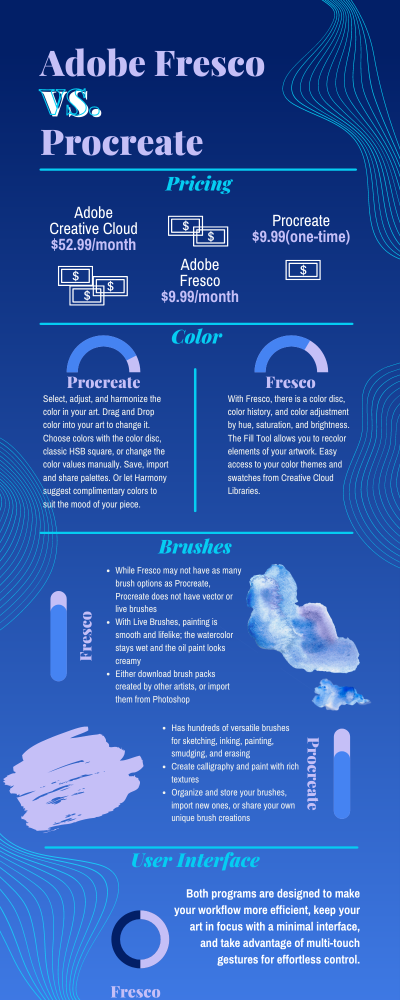
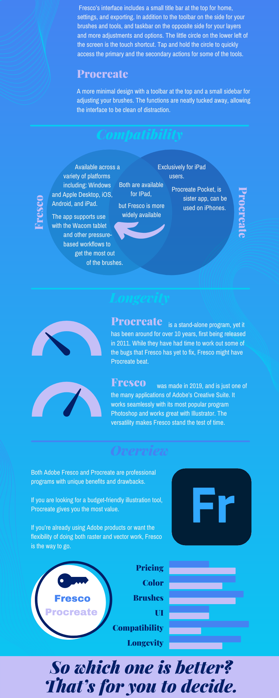

The last component to our project is comparing and contrasting Fresco to Procreate. We took a closer look at color, brushes, pricing, compatibility, user interface, and longevity between the two programs. We wanted to make the learning experience more memorable with an infographic and interactive with a quiz. So make sure you checkout the Quiz page to see how much you remembered!
 